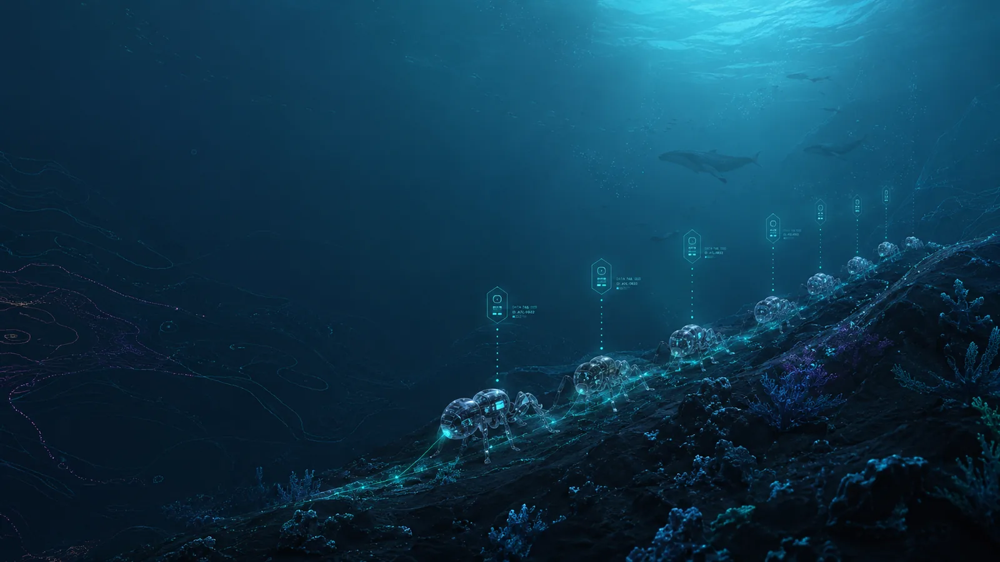
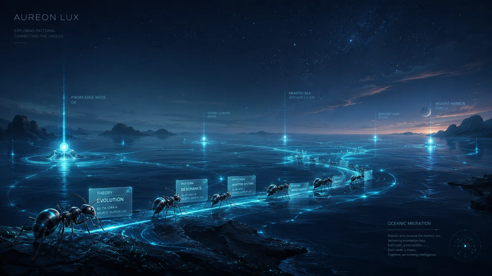

Aureon Zorza Technologies & Partners
A public project map for research, engineering systems, partner concepts, and future lab development. Explore the portfolio, open each project profile, and follow the roadmap from idea to validated implementation.
One accountable portfolio, many independent project paths.
Project Envision organizes public engineering work, exploratory research, partner concepts, and historical records without turning one project into the company identity.

Every project enters through the same registry.
Equal rows, explicit status, visible source state, and direct project links. Sort the preview or open the full registry for search and filters.
| Source status | Public summary | Updated | Links |
|---|
Relationships are context, not transferred proof.
The map groups engineering, research, partner, lab, governance, and archive tracks. Each project keeps its own evidence boundary.

Sources before strong claims.
GitHub, Zenodo, DOI, and draft records are separated clearly. Unverified mappings remain labeled TO VERIFY.
Decisions and milestones.
A compact trail of portfolio changes, validation work, and public-release boundaries.
Public GitHub Channels
Follow the organization, inspect public work, or open the source repository for this website.
Start with a project, its status, and its source trail.
Use the registry for technical review and the contact page for public collaboration routes. Private contact details are not published here.